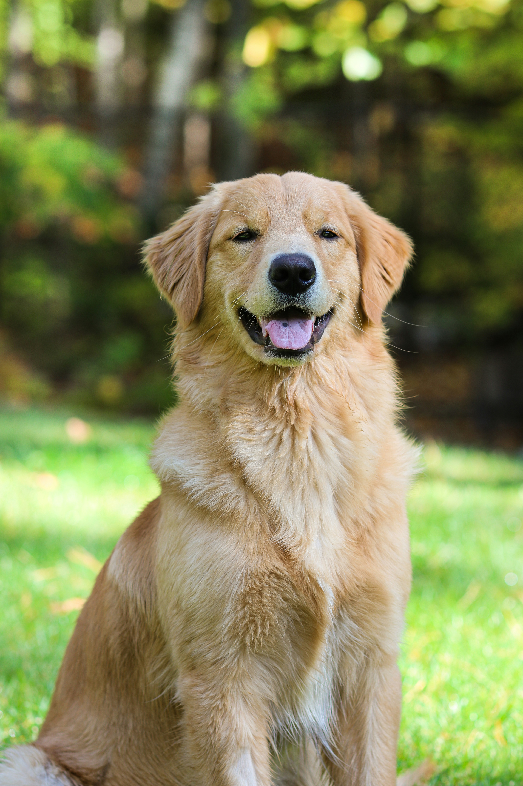
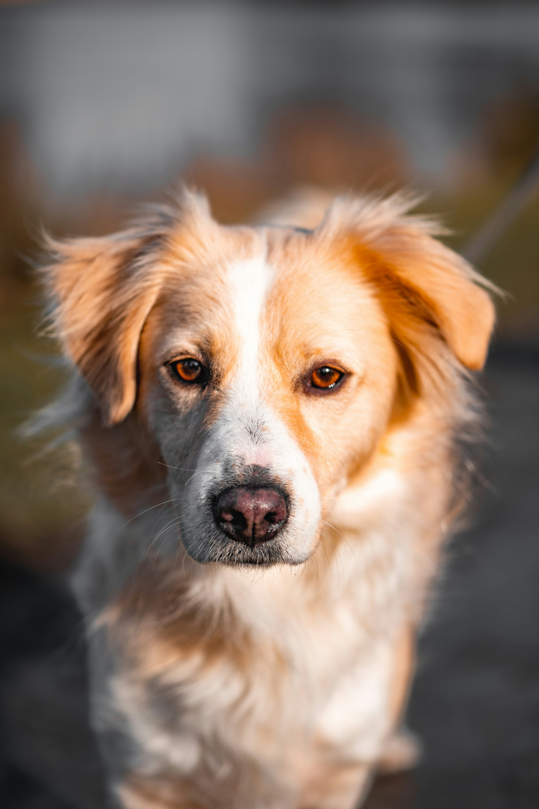

Max (Golden Retriever)
Età: 2 anni. Max è un compagno giocherellone e molto dolce, ideale per famiglie con bambini. Ama le lunghe passeggiate e riportare la pallina.
Conosci i cani che attualmente ospitiamo nel centro. Ognuno di loro ha una storia e aspetta solo te.

Età: 2 anni. Max è un compagno giocherellone e molto dolce, ideale per famiglie con bambini. Ama le lunghe passeggiate e riportare la pallina.

Età: 4 anni. Luna è molto calma e ubbidiente. È stata salvata da una situazione difficile e ora cerca un luogo tranquillo dove sentirsi al sicuro.

Età: 1 anno. Rocky è un cucciolone pieno di energia. Ha bisogno di un padrone dinamico che abbia tempo da dedicare al suo addestramento.